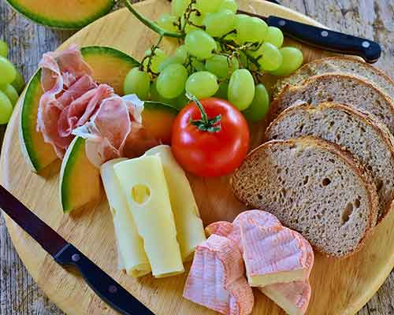
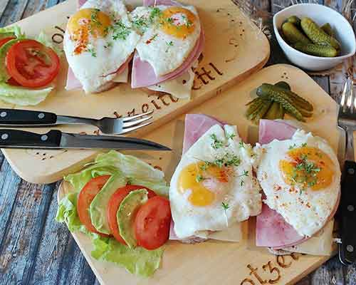

01Open
Hearth bread & cultured butter
Milled this morning, baked on stone. Butter cultured in-house, salted with sea herbs from the harbour wall.
Baked todayHouse cultured

—Included

We write the menu after the market walk. The dishes below are tonight's — tomorrow will be different. Cooked for eight, served at one table. Wine pairing poured alongside.
Five courses, market-led. Allergens and preferences taken at booking — we cook around them honestly. Menu changes when the market tells us to.
Milled this morning, baked on stone. Butter cultured in-house, salted with sea herbs from the harbour wall.
Clamp beetroot, coal-warmed, sheep's curd from the Downs. Garden leaves picked at noon, wood sorrel.
Day-boat fish, alder-smoked lightly, sea purslane and rock samphire. Emulsion of the bones.

Woodland mushrooms, pine oil, hen of the woods crisped over embers. A spoon of fermented barley.

Orchard pear, brown butter and toasted crumb. Pear leaf sugar, a little sea salt. Ending quietly.






Menu changes nightly with the market. Allergens and dietary preferences handled at booking — tell us honestly and we will cook honestly. No à la carte. Whole table tasting only.
Pairing of five glasses, mostly low-intervention, poured alongside. Also by the glass and bottle. We keep the list short and drinkable.